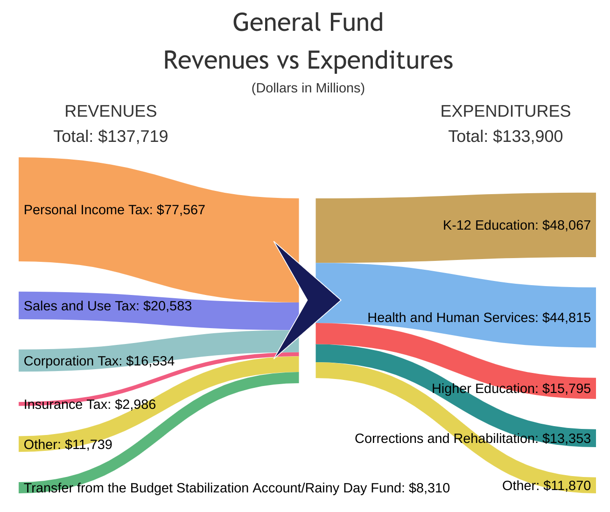
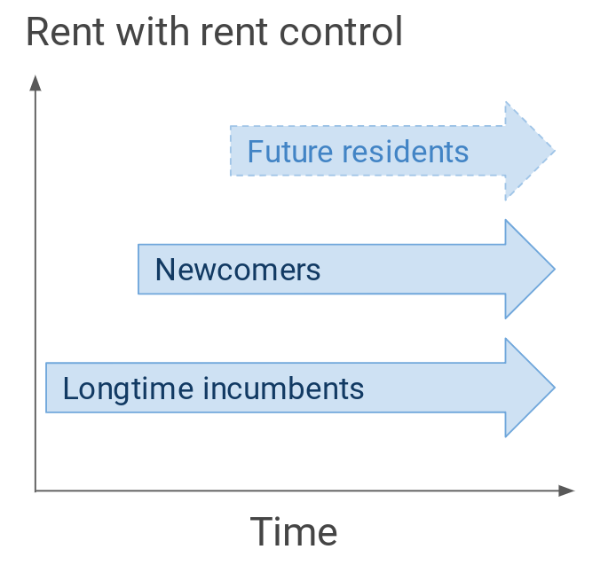
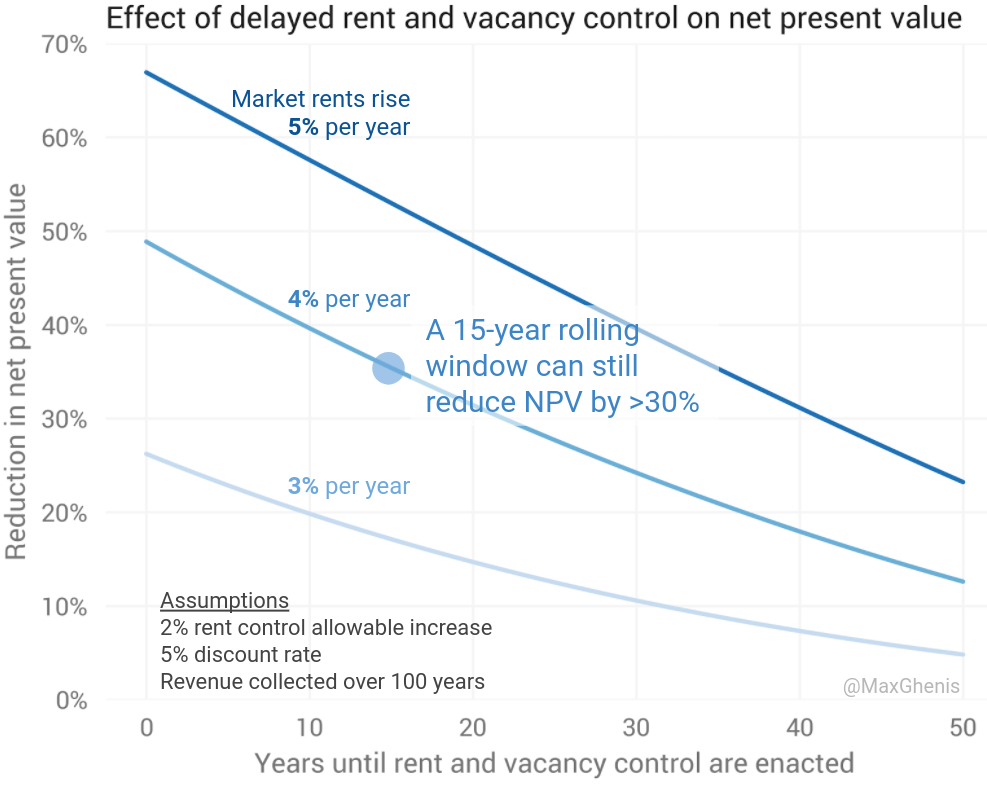

California¶
Summary¶
BIDEN FOR PRESIDENT!!!
Summary text from Ballotpedia.
YES on Prop 14, which issues $5.5 billion in bonds for a state stem cell research institute.
YES on Prop 15, which requires commercial and industrial properties to be taxed based on market value and dedicates revenue.
NO on Prop 16, which repeals Proposition 209 (1996), which says that the state cannot discriminate or grant preferential treatment based on race, sex, color, ethnicity, or national origin in public employment, education, or contracting.
YES on Prop 17, which restores the right to vote to people convicted of felonies who are on parole.
YES on Prop 18, which allows 17-year-olds who will be 18 at the time of the next general election to vote in primaries and special elections.
YES on Prop 19, which changes tax assessment transfers and inheritance rules.
NO on Prop 20, which makes changes to policies related to criminal sentencing charges, prison release, and DNA collection.
NO on Prop 21, which expands local governments’ power to use rent control.
YES on Prop 22, which considers app-based drivers to be independent contractors and enacts several labor policies related to app-based companies.
NO on Prop 23, which requires physician on-site at dialysis clinics and consent from the state for a clinic to close.
NO on Prop 24, which expands the provisions of the California Consumer Privacy Act (CCPA) and creates the California Privacy Protection Agency to implement and enforce the CCPA.
YES on Prop 25, which replaces cash bail with risk assessments for suspects awaiting trial.
Yes on Prop 14¶
Prop 14 issues $5.5 billion in general obligation bonds to continue funding the California Institute of Regenerative Medicine (CIRM), which conducts stem cell research. Combined with $2.3 billion in interest, the bond will cost the state $260 million per year from its General Fund for the next 30 years.
I wasn’t planning on voting for Prop 14. State general obligation bonds are effectively budget set-asides, tying the hands of the legislature in normal budgeting processes. They limit our ability to respond to changing conditions, such as the Covid-19 emergency. Unlike local general obligation bonds, which are repaid in property taxes, state bonds don’t raise any tax revenue. That means each dollar that pays for debt repayments is a dollar that can’t fund other General Fund programs, 80 percent of which makes Californians healthier, more educated, and less poor.

I was persuaded to change my vote by Alexander Berger, Managing Director of the Open Philanthropy Project (“Open Phil”), one of the most prominent and, in my opinion, credible effective altruism philanthropic organizations. Open Phil is the sister organization to GiveWell, which identifies cost-effective charities for saving lives, like malaria bed nets, guiding the vast majority of my personal giving. Berger wrote about Open Phil’s science team finding that CIRM’s grants are “as good or better than average funding from the NIH” and how this basic research is a highly cost-effective global public good. Ideally, the legislature would budget for such a beneficial program, but Berger predicted that CIRM would be “dead or massively shrunk if 14 fails.” This led Open Phil to contribute $580,000 to get Prop 14 on the ballot.
Stem cell research is already bearing fruit in helping to develop potential Covid-19 vaccines and treatments, and has a bright future in developing new therapies. California’s interest rate on bonds is below inflation, and Prop 14 locks in research budgets to help CIRM focus on long-term basic research that benefits the planet. I trust Berger and Open Phil to make the right decision here, so despite my reservations about good governance, I’m voting to continue this funding stream.
(I’m also voting for Propositions 15 and 19 which directly increase tax revenue, for Prop 22 which indirectly increases revenue, and against Propositions 21 and 23 which indirectly reduce net tax revenue, so that we can fund more programs like this without a zero-sum approach.)
Yes on Prop 15¶
Prop 15 assesses property taxes for certain commercial buildings based on current market value rather than its purchase price, generating between $6.5 billion and $11.5 billion annually for local governments and schools. It creates a “split-roll” property taxation system, where residential properties, agricultural properties, and commercial properties worth under $3 million would be taxed on their purchase price (plus an increase of up to two percent per year), and commercial properties worth more than $3 million would be taxed on current market value. Tax rates would continue to be capped at 1 percent due to 1978’s Prop 13, which also capped annual increases by 2 percent for all properties.
Prop 15 would bring revenue to every local government and school district in the state. Many of these entities were struggling financially before the pandemic, and are now facing catastrophic budget cuts. Its remedy is to stop giving incumbency property tax breaks to owners of valuable commercial property, putting new businesses on the same footing as legacies. For example, today a new grocery store would pay multiple times the property taxes of one that’s been on its location since 1980. This anti-newcomer property tax regime discourages entrepreneurship and starves governments of funds.
That said, Prop 15 is not without its risks. While pro-housing groups support Prop 15, one housing-related concern has been that split-roll property taxation may encourage local governments to zone land for commercial over residential use, since commercial properties would pay more taxes than residential properties over time. Research from the Bay Area think tank, SPUR, gives credence to this suspicion around land use fiscalization, finding that cities that retain more property tax revenue (compared to the state, thanks to clauses of 1978 Prop 13) produce more housing. However, an analysis from the Urban Institute found that a small share of residential parcels could be plausibly rezoned to commercial use, and that the opposite incentive—for commercial property owners to convert their property to multifamily housing when it’s zoned for both, given lower property tax increases—is significantly larger in magnitude. As authors of the Urban study acknowledge, those property owners would encounter difficulty going through local approval processes, and having supported housing in many such local meetings, I think their optimism may be overstated. While I’m still uncertain about the effects on housing production, their study reduced my concern.
Consumers and workers would also bear some of the costs, given the evidence that commercial tenants bear a significant share of commercial property tax burdens. However, the types of commercial properties that would be affected, large legacy businesses with an artificial advantage over competitors, are likely to be less productive than newcomer peers, so consumers and workers would likely have better options if Prop 15 gave these new entrepreneurs an opportunity to compete. And on net, extra taxes of this form would be more than compensated by greater public spending, making the reform progressive on the whole.
Finally, there’s a political risk that carving out the least sympathetic beneficiaries of 1978 Prop 13—large commercial property owners—makes a grand bargain that includes residential property tax reform less likely. Residential Prop 13 benefits make California resemble an aristocracy, with newcomers subsidizing the public services used by longtime incumbents through higher property taxes and higher income taxes, needed to offset the low property tax revenue. However, defeating parts of Prop 13 through split-roll and cutting its inheritability, could give it the momentum needed to chip away over time.
Overall, Prop 15’s benefits are clear: billions in revenue for local governments and schools as we dig our way out of a historic recession, funded by incumbent businesses who’ve had a nativist property tax break for too long. The risks around housing production, tax incidence, and political bargaining are directionally uncertain and clearly smaller than the advantages. This is one of the most consequential measures on the ballot, improving California’s tax system and fiscal situation for decades to come. Vote yes.
No on Prop 16¶
Prop 16 allows the state to use race and other demographics as factors when deciding whom to hire into government positions, whom to admit to public universities, and whom to select for government contracting.
Centuries of discrimination have created persistent disparities in California. Even among young people, educational attainment is about twice as high for non-Hispanic Whites as for Blacks and Hispanics. Income of young Blacks and Hispanics of color is about 40 percent lower, and they’re about 70 percent more likely to be in poverty.1
We must rectify this injustice as we have with other injustices. Until five years ago, same-sex marriage was illegal in the U.S. By highlighting this flagrant violation of equal protection, liberals won in the court of law and in the public, with support for gay marriage having risen consistently since 2004, across all demographic groups, religions, and political affiliations. As my own research has shown, more egalitarian (race-blind) social protection policies would dramatically shrink racial economic disparities. Many race-blind policies, such as baby bonds and student loan cancellation, have emphasized racial justice as a rationale, given the disproportionate benefits for people of color due to their higher student debt and lower income, on average.
If liberals had instead demanded special rights for same-sex couples, we would have missed the opportunity to appeal to equal protection, and I doubt we would have moved public opinion or the law as quickly. Race-conscious social protection policies offer a barometer: only 1 in 5 Americans support reparations, which are probably unconstitutional.
Hiring based on race, as Prop 16 would permit, is similarly unpopular, with over 70 percent of Americans opposed.2 This isn’t surprising; the relationship between employment, education, and income makes racial preferences in these domains effectively a form of reparations.
Evidence suggests that race-conscious programs could drive racial resentment. For example, a survey experiment found that racial resentment among conservatives is closely tied to opposition to race-conscious programs. Opening up public housing to immigrants in Austria also increased support for anti-immigrant parties; competition of similarly salient zero-sum benefits like public university admissions and government jobs could also spark a backlash. Rather than justifying stinginess or exclusion, these results suggest that equal opportunity to scaleable assistance like cash transfers and tax credits is a safer way to form a safety net (abolishing exclusionary zoning laws, rooted in racism, would also help).
Finally, and on a personal note, demographic trends make race-conscious policies harder to implement. Reflecting our melting pot of a country, a 2015 survey identified 1 in 15 Americans as mixed-race—about half the Black population share. About a third of these mixed-race individuals have changed how they describe their own race throughout their life. I am one such person: my dad is Latino and my mom is non-Hispanic White. Should people like me be strategizing about which box to check on a form, to maximize chances at getting into a university or getting a government job?
If we want an egalitarian, race-blind future, we need to create it today.
Yes on Prop 17¶
Prop 17 would allow California residents on state parole, currently about 50,000 people, to vote.
Criminal disenfranchisement has a racist history and is unsupported by the public. There is no evidence that it deters crime, and if anything, it may increase it, given the association between voting and reduced recidivism. Given parental turnout predicts children’s turnout, criminal disenfranchisement may be suppressing political participation across generations.
Granting parolees the franchise can address these ills. It will not the final step in increasing political participation: informing parolees of their new rights, joining Vermont and Maine in allowing prisoners to vote, making it easier for young people to vote, enabling non-citizens to serve on commissions, and many other reforms will help as well. But Prop 17 makes substantial progress toward a more inclusive democracy.
Yes on Prop 18¶
Prop 18 allows 17-year-olds who will be 18 at the time of the next general election to vote in primaries and special elections. Expanding the franchise promotes democracy, and by giving 17-year-olds the opportunity to vote in these lower-stakes elections while still at home with higher-voting-propensity parents, this could feed a cycle of improved voter participation long-term, especially among young people. Vote yes.
Yes on Prop 19¶
Prop 19 makes homeowners who are over 55 (or who meet other qualifications) eligible for property tax savings when they move, and restricts tax savings for inherited properties to those used as primary homes or farms.
These clauses forge a bargain over 1978’s Prop 13 and extensions thereof. Prop 13 caps annual increases to property taxes at two percent. This has amounted to often-enormous incumbency discounts on property taxes and starved local governments of funds. It was then expanded several times:
1978 Prop 8 allowed for reassessments in a declining market
1986 Prop 58 allowed parents to transfer their low property tax assessments to children
1986 Prop 60 let homeowners over age 55 to keep their low property tax assessments when moving to a home of equal or lesser value in the same county
1988 Prop 90 extended 1986 Prop 60 to moves in other counties, given that county allows it
1996 Prop 193 extended 1986 Prop 58 by allowing grandparents to transfer their property to grandchildren whose parents have deceased
2018 Prop 5 attempted to expand Prop 60 (1986) and Prop 90 (1988) further, by allowing seniors to take their property tax discounts anywhere in the state. I voted against this expansion of the unjust Prop 13, which would have cost $1 billion per year in taxes.
Just before the 2018 election, the impact of Prop 13 inheritance also became more widely known, with a major LA Times story focusing on wealthy children paying next-to-no taxes on their inherited properties.
Prop 19 trades off the inequities of 2018 Prop 5 for the inequities of Prop 13 inheritance. I have no philosophical prior on whether Prop 13 portability or inheritance is worse, so I’ve relied on the California Legislative Analyst Office, which projected that the trade will generate hundreds of millions of dollars per year in net tax revenue. That seals the deal for me: it indicates that it weakens Prop 13 overall and provides more resources for local governments and schools when they need it most. Vote yes.
No on Prop 20¶
Prop 20 increases penalties for theft-related crimes, and makes it harder to get out of prison early. This plainly goes the wrong direction on criminal justice reform, where the United States leads in destroying lives. Vote no.
No on Prop 21¶
Prop 21 largely repeals the Costa-Hawkins Act, a 1995 law that limits cities’ ability to enact rent control. Under Costa-Hawkins, rent control cannot apply to single-family homes, condos, and units built after the earlier of 1995 or the city’s passage of their rent control (for example, 1979 in San Francisco). Costa-Hawkins also prohibits cities from limiting rent increases after a tenant moves out of their unit (such rent increase limitations are known as vacancy control).

Prop 21 follows November 2018 Prop 10, which also repealed Costa-Hawkins. I was among the 60 percent of Californians who voted against Prop 10, for a few reasons:
Rent control’s savings for incumbents come at the expense of newcomers and others who have to move, who pay higher housing costs thanks to lower supply of rental housing, according to a 2017 Stanford study.
Other research shows that rent control reduces the quality of rental housing (especially vacancy control, which removes the incentive to improve units after a tenant moves out), increases homelessness, lengthens commutes, and keeps people from living where they want to live, and that its benefits accrue disproportionately to rich people.
Other policy tools are available to reduce displacement, such as housing vouchers and tax credits for low-income renters.
This explains the 95 percent of top economists who oppose rent control. All these reasons still apply: rent control continues to be a counterproductive, nativist transfer, that arguably crowds out the proven redistribution policies that would actually accomplish its goals.
Legislation from 2019 makes Prop 21 especially inappropriate: Assembly Bill 1482 created rent control statewide, limiting annual rent increases to 5 percent plus inflation. This was crafted with the involvement of tenants groups, labor unions, and developers from across the state. It avoids some of the most damaging forms of rent control that Costa-Hawkins would permit cities to enact, such as vacancy control on 15-year-old properties, set at 0 percent increases. This isn’t hypothetical; Berkeley had vacancy control prior to Costa-Hawkins, and had a 2018 ballot measure to extend its 65-percent-of-inflation rent control to properties 20 years old (nearly reducing the threshold to 15 years). As I wrote in 2018, this is no coincidence: “Despite the bay area’s economic growth, Berkeley has grown its population 40% slower than California, having done so by consistently blocking housing.”
Prop 21 improves upon 2018 Prop 10 by setting a minimum exemption of 15 years, such that brand-new buildings can increase rents up to AB 1482’s limits. While this prevents the worst potential excesses of rent control, of the form the Policy Directory for UC Berkeley’s Terner Center for Housing Innovation described as “a de facto ban on new housing,” it still permits rent control laws that would dramatically reduce the incentive to build. For example, I simulated the effect of rent control laws under conditions that are reasonable by historical standards, and found that a 15-year exemption window would still reduce the net present value of a housing development by over 30 percent. When the payoff is 30 percent less, many housing projects fail to pencil out, and California’s worst-in-the-nation housing shortage (producing worst-in-the-nation poverty) worsens.

The philosophical underpinning of Prop 21 is a conservative one: local control is best, especially to benefit incumbents. This ethos has been the status quo in California, enabling cities to repeatedly shirk responsibility to build badly-needed housing. More local control is not better, just as more states’ rights are not better; what matters is results. The state has already formed a rent control law that avoids exclusionary policies cities would double down on if given the chance. Costa-Hawkins prevents cities from depressing property values and lowering tax revenues by as much as hundreds of millions of dollars per year. Rather than repeal it, we should instead invest in aggressive redistributional policies that keep people in their homes without offloading the costs to newcomers.
Yes on Prop 22¶
Prop 22 allows app-based rideshare and delivery companies to hire drivers as independent contractors, and provides them some additional benefits. It effectively amends Assembly Bill 5, a 2019 California law that established conditions for classifying workers as independent contractors, which classifies rideshare and delivery drivers as employees.
AB5 has targeted companies like Uber, Lyft, Instacart, and DoorDash from the beginning, but it had to be written in a more general way to pass constitutional muster. While AB5 arbitrarily exempted high-earning worker types like doctors, lawyers, accountants, and real estate agents from the beginning, it has affected many other occupations that rely on independent contractor status. A subsequent amendment carved out musicians, who under AB5 would have to be designated as employees of each band they gigged with (as someone who’s played hundreds of gigs with dozens of bands, this was a ludicrous requirement). Freelance journalists and photographers lost work, but the author of AB5, Assemblymember Lorena Gonzalez, didn’t give them the musician treatment, saying they “were never good jobs” (she didn’t say what made them worse than musician gigs); in March, a federal judge refused to exempt them.
Job categories that have lobbied hard enough, and come across as sufficiently sympathetic, have gotten exemptions, while others have become casualties to the objective of punishing Uber, Lyft, Instacart, and DoorDash. I generally oppose ballot measures that could be decided by the legislature, but AB5 is a mockery of rule of law that justifies overruling action.
As for the substance, Prop 22 creates economic opportunity for many who can’t work the full-time employee schedule established for early-20th-century factories. For a glimpse of what would happen without it, we can consider the cannabis-delivery business, which reclassified its drivers in 2018. Drivers now follow a regular schedule, in some companies capped at 30 hours per week to avoid triggering health insurance, in others capped at 40 hours per week to avoid overtime pay. In one company, half of the drivers quit because they preferred being independent contractors, pursuing other gig work (i.e., Uber/Lyft/Instacart/DoorDash) instead.
My dad is among the many rideshare drivers who works a mix of longer shifts and ad hoc drives, often to and from errands or visits to friends or family. He lives in San Jose, but on many occasions his drives would take him up to San Francisco, and the two of us would have an impromptu meal. Unlike caregivers with unpredictable availability, he could get by with preset shifts, but he’d lose the spontaneity that’s incompatible with employee status—no business can offer its employees unlimited ad hoc work, regardless of customer demand and supply of other workers. And by allowing drivers to choose in real time between Uber and Lyft, as my dad does, independent contractor status fights the wage- and employment-reducing force of monopsony.
That flexibility also benefits customers, especially people without personal vehicles or who want to avoid in-person shopping. I’ve lived in a city twice without a car, once pre-Uber and once post-Uber. That city (San Francisco) probably has the best public transit in the state, but it still took an hour to get just a couple miles, especially late at night, and just as long to hail a cab. In my second SF stretch, bikeshare and living in a more walkable area reduced my need for Uber and Lyft, but on the few occasions I used it, the alternatives were far less convenient—sometimes impossible, like going to the airport.
Today, my partner and I live in a suburb that’s probably a bit denser than the California average, but getting to a store still requires biking on 50mph-speed-limit roads with no protected bike lane—transit is effectively nonexistent. When we moved, Uber and Lyft were our only ways to get around safely, and with the pandemic we finally bought a car after years without one. We also use Instacart to get groceries safely in the pandemic.
Our experience is typical of Californians. I applaud people who can live without a car or rideshare in dense urban areas, but for most, the choices are (a) car ownership, (b) unsafe biking or time-consuming transit, or (c) Uber and Lyft. People with means to avoid (b) will buy vehicles, clogging up roads and requiring huge swaths of land for vehicle storage, if Uber and Lyft become inaccessible or even less affordable and convenient. Any additional costs borne by Instacart and Doordash will translate directly to more people buying groceries or eating in restaurants amid a pandemic, threatening public health—and of course, to more driving and its associated pollution and carbon emissions. These services provide new freedom to people who can’t drive at all, like seniors and people with disabilities, and save lives through multiple channels.
I’ve heard concerns on good-governance grounds that Prop 22 requires seven-eighths of the legislature to amend. This isn’t surprising: 77 percent of the Assembly and 73 percent of the Senate voted for AB5, largely on a party-line vote. Democrats may gain seats in November, so any threshold short of three-fourths could make it dead on arrival. If something goes so wrong with Prop 22 (and I’m not sure what that would be), it could also be revised by ballot measure; three of the 12 measures on this year’s state ballot intend to revise prior ballot measures. Fundamentally, I’m not convinced this is a major issue because I don’t believe the legislature should be banning gig work at all, just as I don’t think local governments should be banning duplexes at all, and supported a state bill that would prevent them from doing so. Good governance isn’t just about empowering the legislature, it’s about making it hard for them to do bad things; that’s why we have a constitution, it’s why state law sometimes supersedes local law, and it’s why ballot measures can have reasonable safeguards to ensure the will of the people is adhered to.
Prop 22 redresses an unjust, corrupt law, preserving the flexibility of modern economic opportunities and expanding them with benefits like earnings minimums and a health insurance stipend. According to the nonpartisan Legislative Analyst Office, it will increase total driver earnings and tax revenue. While we also need better transit and safer bicycle infrastructure, and to allow denser, more walkable cities, Prop 22 will also reduce personal vehicle ownership and its many ills. Vote yes.
No on Prop 23¶
According to Ballotpedia:
Prop 23 would require chronic dialysis clinics to:
have a minimum of one licensed physician present at the clinic while patients are being treated, with an exception for when there is a bona fide shortage of physicians;
report data on dialysis-related infections to the state health department and National Healthcare Safety Network (NHSN);
require the principal officer of the clinic to certify under penalty of perjury that he or she is satisfied, after review, that the submitted report is accurate and complete; and
provide a written notice to the state health department and obtain consent from the state health department before closing a chronic dialysis clinic.
This follows Prop 8 from November 2018, another labor dispute that SEIU-UHW West took to the ballot box. Californians rejected that measure, which would have capped dialysis companies’ revenue to 115 percent of some costs—mostly labor—by 20 points. Rather than negotiate through the legislature, the labor group spent millions forcing California voters to decide yet another dialysis measure, with patients again caught in the middle.
Similarly to their assessment of 2018 Prop 8, the nonpartisan Legislative Analyst Office projects that Prop 23 would raise costs to health insurers, including state and local governments paying tens of millions per year, and may result in the closure of some clinics. By the same logic, it could reduce the growth of new clinics, which will be needed as California’s population ages.
Prop 23 also exacerbates existing problems in our healthcare system by worsening our growing physician shortage and moving away from alternative medical staffing that makes treatment more affordable and accessible. Occupational licensing requirements like these are incompatible with goals for universal healthcare, and if anything they should be slimmed down, as many states have done to meet needs during the pandemic.
Between 2018 Prop 8 and 2020 Prop 23, over $230 million will have been spent educating voters about kidney treatment esoterica. That’s money that would otherwise be improving the quality and/or affordability of treatment for dialysis patients. It’s an abuse of democracy for regulatory capture that voters must, again, reject.
No on Prop 24¶
Prop 24 expands consumer data privacy laws, making the existing California Consumer Privacy Act more closely resemble Europe’s Global Data Protection Regulation (GDPR). Enacted in 2018, GDPR is the reason that every site asks you to confirm cookies; although it affects Europeans only, websites can’t be sure if a user is European, and the potentially enormous fines make it not worth the risk.
GDPR goes beyond cookie notices though, regulating how long certain data can be held, what kinds of processes must be used to store personal data, and so on. The regulations are so complex that compliance is often infeasible for smaller companies. The result is reduced competition in the tech sector, with big companies like Google (my former employer) charging small businesses for services that deal with the regulations; these costs ultimately prevent new businesses from entering.
Other jurisdictions should be cautious about creating new versions of GDPR. If every country had its own data privacy laws, it could become difficult or impossible for websites to comply with all simultaneously (any website on Earth could be serving California users). California doing it would be better than cities, as San Francisco attempted in 2018 Prop B, but jurisdictions of 40 million people are still too fine-grained. This is a matter for the legislature to consider, and ideally for them to defer to the federal government, which would approach data privacy in the international setting it demands. Vote no.
Yes on Prop 25¶
Prop 25 replaces California’s cash bail system with a risk assessment system.
Cash bail advantages wealthier people charged with crimes, and evidence from Orange County suggests that “pending bail reform measures in California and elsewhere, which replace cash bail with risk assessment screening and non-monetary supervised release, can be implemented without sacrificing appearances in court.” This is a positive step in reducing time spent in jail and building a fairer criminal justice system.
- 1
Author’s calculations from Current Population Survey March Supplements reflecting income from 2017 to 2019 among Californians age 25 to 35. Poverty is based on the Supplemental Poverty Measure.
- 2
Americans support “affirmative action” in significantly higher numbers than they support making race a factor in admissions and hiring decisions, suggesting that the term is broadly misunderstood.